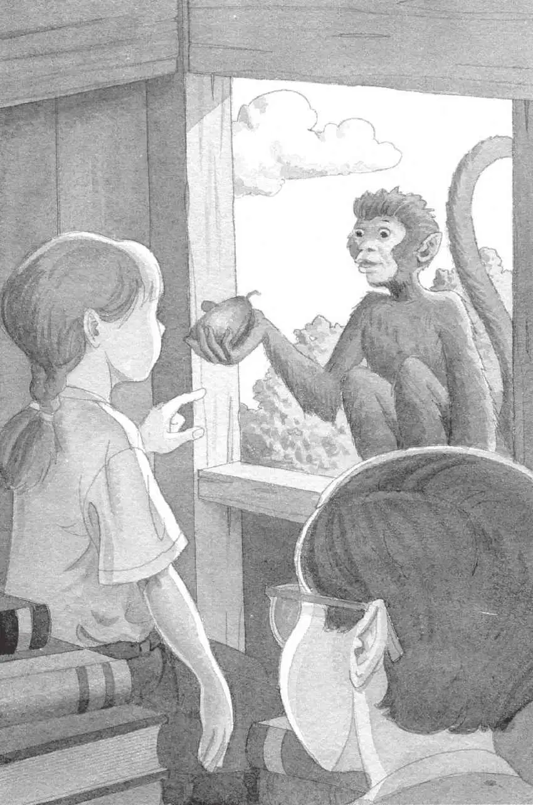

杰克和安妮爬进了树屋。
小老鼠坐在一摞书上。
安妮拍了拍小老鼠的脑袋。“谢谢你。”她轻声说道。
“我要写几条关于热带雨林的笔记。”杰克说，“你把宾夕法尼亚的书找出来吧。”
安妮开始找那本宾夕法尼亚的书——每次都是这本书把他们带回了家。
杰克掏出他的笔记本。
他本来打算在热带雨林里写大量的笔记，可是目前，写在本子上的只有一行字：
“不在这儿！”安妮说。
“什么？”杰克抬起头说，并在树屋里扫视了一圈。
安妮说得对。那本宾夕法尼亚的书不见了。
“我们离开家的时候，它在这儿吗？”杰克问道。
“我不记得了。”安妮回答。
“哦，天哪，”杰克说，“现在我们没办法返回蛙溪了。”
“这就是说，当那些吸血蝙蝠出来活动的时候，我们还在这儿。”安妮说。
有什么东西从树屋的窗户飞了进来。
“啊啊！”安妮和杰克吓得赶紧捂住脑袋。
砰。
什么东西砸在了地上。是一颗红果子。
杰克抬头一看。那只小猴子坐在窗台上。它把脑袋歪向一边，似乎正在朝他们咧嘴嬉笑。
“你平安无事了！”安妮对小猴子说。
“谢谢你救了我们。”杰克说。
小猴子只是咧嘴笑着。
“我想问你一个问题。”安妮指着那颗红果子说，“你为什么不停地朝我们扔这些东西？”
小猴子抓起红果子。
“别！别扔！”杰克说着低头躲闪。
可是小猴子并没有扔红果子。
它把红果子递给安妮。它的嘴唇在动，似乎想说些什么。
安妮盯着小猴子的眼睛。小猴子又动了动嘴唇。
“哇！”安妮轻声说道，“我现在明白了。”
“明白什么？”杰克问。
安妮从小猴子手里接过那颗红果子。“这个就是，”她说，“就是我们需要的东西。”
“什么东西？”杰克问。
“就是我们要为仙女摩根寻找的那几样东西中的一样呀，”安妮说道，“为了把她从魔咒下解救出来。”
“你确定吗？”杰克问。
安妮还没来得及回答，杰克就看见了那本宾夕法尼亚的书。
“看！我们的书！”他指着书说道。
“我们找到了东西，所以就能看见那本书了。”安妮说，“规则就是这样的，记得吗？”

杰克点点头。他这会儿想起来了。忍者大师说过，只有找到了他们所寻找的东西，他们才能看见那本宾夕法尼亚的书。
小猴子尖声大笑起来。
杰克和安妮都看着它。它噼里啪啦地拍着巴掌。
安妮也跟它一起放声大笑。“你怎么知道要把这个给我们？”她问道，“是谁叫你这么做的？”
小猴子只是朝杰克和安妮挥了挥手，然后转过身，荡出了树屋。
“等一等！”杰克看着窗外说道。
来不及了。小猴子已经消失在树冠层下面了。
“再见！”安妮大声喊道。
从下面那个神秘的世界里，传来了一声快乐的尖叫。
杰克叹了口气，又拿起了笔记本。他看着自己写的那句话：
在他们离开前，他必须再写点儿什么。他迅速在后面加上了——
杰克把笔记本收起来。安妮拿起宾夕法尼亚的书。
“现在真的该离开了。”她说。
她翻到蛙溪树林的那幅图片。“请带我们回家。”她指着图片说道。
起风了。
树叶开始颤动。
树屋开始旋转，越转越快。
然后，一切都静止了。
完完全全地静止不动了。